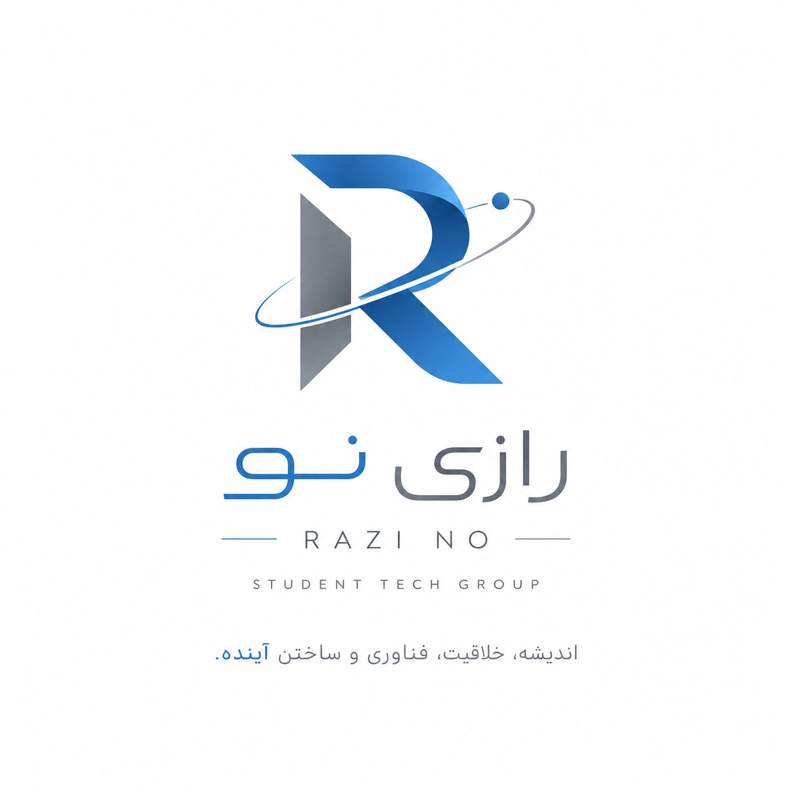

⌁
ایدهپردازی
مسئلهها را پیدا میکنیم و برایشان ایدههای خلاقانه و قابل اجرا طراحی میکنیم.

رازی نو ارتباط«رازی نو» یک گروه دانشآموزی در حوزهی کار و فناوری است؛ جایی برای ترکیب خلاقیت، طراحی، برنامهنویسی و حل مسئله.
ما تلاش میکنیم پروژههایی بسازیم که فقط یک تکلیف درسی نباشند. از یک ایده شروع میکنیم، مسئله را پیدا میکنیم، طراحی میکنیم، میسازیم، آزمایش میکنیم و در نهایت نتیجه را به یک محصول یا تجربهی قابل ارائه تبدیل میکنیم.
چهار مسیر، یک هدف:
ساختن چیزی که ارزش نشان دادن داشته باشد.
مسئلهها را پیدا میکنیم و برایشان ایدههای خلاقانه و قابل اجرا طراحی میکنیم.
ایده را از روی کاغذ بیرون میآوریم و به یک نمونهی واقعی و قابل ارائه تبدیل میکنیم.
از ابزارهای دیجیتال و برنامهنویسی برای ساخت تجربهها، وبسایتها و پروژههای هوشمند استفاده میکنیم.
پروژه را تست میکنیم، بهترش میکنیم و آن را به شکلی حرفهای ارائه میدهیم.
فکر میکنیم، میسازیم و برای آینده ایدههای تازه خلق میکنیم.
هر عضو یک نگاه متفاوت دارد؛
همین تفاوت، تیم را میسازد.
سرگروه · @RAMtinHB
@arshamkg
عضو گروه
@Aa12l